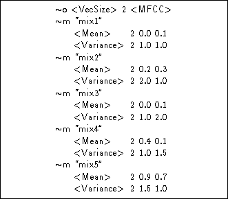
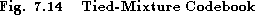
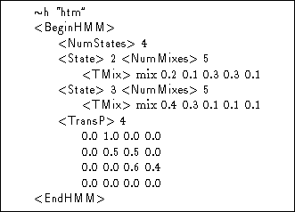
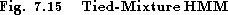
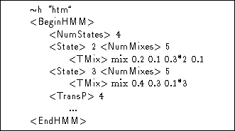
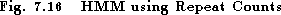

A Tied-Mixture System is one in which all Gaussian components are stored in a pool and all state output distributions share this pool. Fig 7.13 illustrates this for the case of single data stream.
Each state output distribution is defined by M mixture component weights and since all states share the same components, all of the state-specific discrimination is encapsulated within these weights. The set of Gaussian components selected for the pool should be representative of the acoustic space covered by the feature vectors. To keep M manageable, multiple data streams are typically used with tied-mixture systems. For example, static parameters may be in one stream and delta parameters in another (see section 5.10). Each stream then has a separate pool of Gaussians which are often referred to as codebooks.
More formally, for S independent data streams, the output distribution for state j is defined as
where the notation is identical to that used in equation 7.1. Note however that this equation differs from equation 7.1 in that the Gaussian component parameters and the number of mixture components per stream are state independent.


Tied-mixture systems lack the modelling accuracy of fully continuous density systems. However, they can often be implemented more efficiently since the total number of Gaussians which must be evaluated at each input frame is independent of the number of active HMM states and is typically much smaller.
A tied-mixture HMM system in HTK is defined by representing the
pool of shared Gaussians as  m macros with names ``xxx1'',
``xxx2'', ..., ``xxxM'' where ``xxx'' is an arbitrary name.
Each HMM state definition is then specified by giving the name
``xxx'' followed by a list of the mixture weights. Multiple
streams are identified using the <Stream> keyword as described
previously.
m macros with names ``xxx1'',
``xxx2'', ..., ``xxxM'' where ``xxx'' is an arbitrary name.
Each HMM state definition is then specified by giving the name
``xxx'' followed by a list of the mixture weights. Multiple
streams are identified using the <Stream> keyword as described
previously.
As an example, Fig 7.14 shows a set of macro definitions which specify a 5 Gaussian component tied-mixture pool.


Fig 7.15 then shows a typical tied-mixture HMM definition which uses this pool. As can be seen, the mixture component weights are represented an array of real numbers as in the continuous density case.


The number of components in each tied-mixture codebook is typically of the order of 2 or 3 hundred. Hence, the list of mixture weights in each state is often long with many values being repeated, particularly floor values. To allow more efficient coding, successive identical values can be represented as a single value plus a repeat count in the form of an asterix followed by an integer multiplier. For example, Fig 7.16 shows the same HMM definition as above but using repeat counts. When HTK writes out a tied-mixture definition, it uses repeat counts wherever possible.